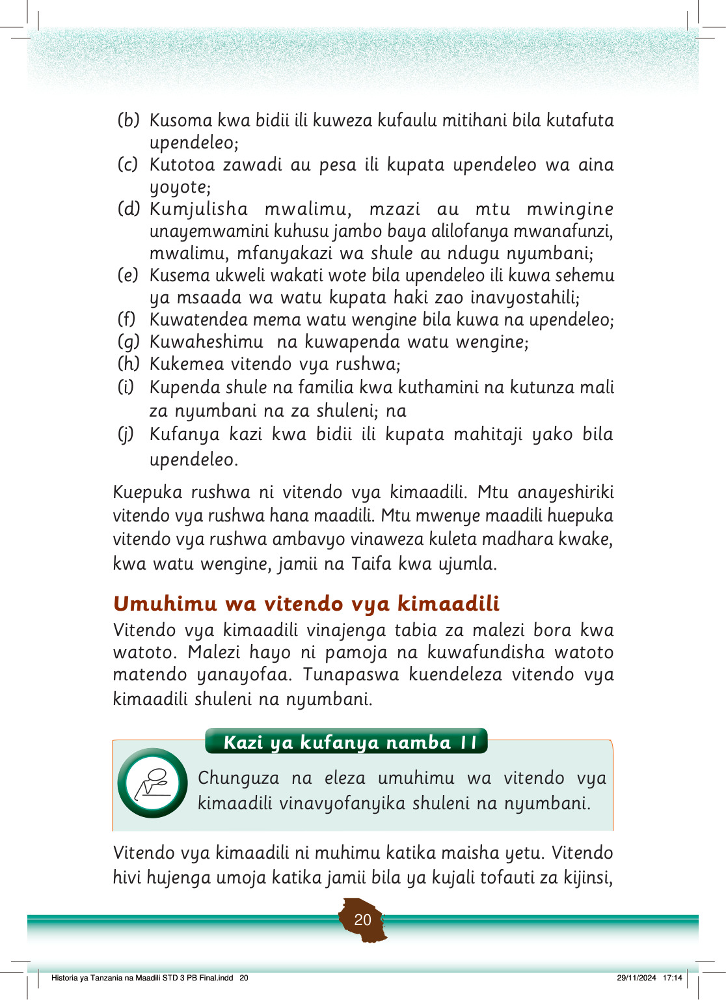

(b)
Kusoma kwa bidii ili kuweza kufaulu mitihani bila kutafuta upendeleo;
(c)
Kutotoa zawadi au pesa ili kupata upendeleo wa aina yoyote;
(d)
Kumjulisha mwalimu, mzazi au mtu mwingine unayemwamini kuhusu jambo baya alilofanya mwanafunzi, mwalimu, mfanyakazi wa shule au ndugu nyumbani;
(e)
Kusema ukweli wakati wote bila upendeleo ili kuwa sehemu ya msaada wa watu kupata haki zao inavyostahili;
(f)
Kuwatendea mema watu wengine bila kuwa na upendeleo;
(g)
Kuwaheshimu na kuwapenda watu wengine;
(h)
Kukemea vitendo vya rushwa;
(i)
Kupenda shule na familia kwa kuthamini na kutunza mali za nyumbani na za shuleni; na
(j)
Kufanya kazi kwa bidii ili kupata mahitaji yako bila upendeleo.
Kuepuka rushwa ni vitendo vya kimaadili.
Mtu anayeshiriki vitendo vya rushwa hana maadili.
Mtu mwenye maadili huepuka vitendo vya rushwa ambavyo vinaweza kuleta madhara kwake, kwa watu wengine, jamii na Taifa kwa ujumla.
Umuhimu wa vitendo vya kimaadili
Vitendo vya kimaadili vinajenga tabia za malezi bora kwa watoto.
Malezi hayo ni pamoja na kuwafundisha watoto matendo yanayofaa.
Tunapaswa kuendeleza vitendo vya kimaadili shuleni na nyumbani.
Historia ya Tanzania na Maadili STD 3 PB Final.indd 20
29/11/2024 17:14
Kazi ya kufanya namba 11
Kazi ya kufanya namba 11: Chunguza na eleza umuhimu wa vitendo vya kimaadili vinavyofanyika shuleni na nyumbani.
Chunguza na eleza umuhimu wa vitendo vya kimaadili vinavyofanyika shuleni na nyumbani.